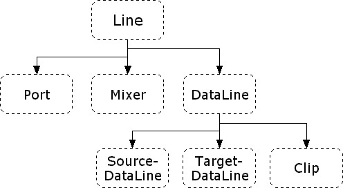

Java Sound. Eine Einführung toc prev next
1.1.2.1 Die Interface lineAlle interfaces stammen von line ab. Die Line interface Hierachie:  Das Interface Line besitzt folgende Eigenschaften:
Das Interface DataLine besitzt folgende Eigenschaften, Methoden und Events:
|
Java Sound. Eine Einführung toc prev next [ back to a p a g e 4 u ]